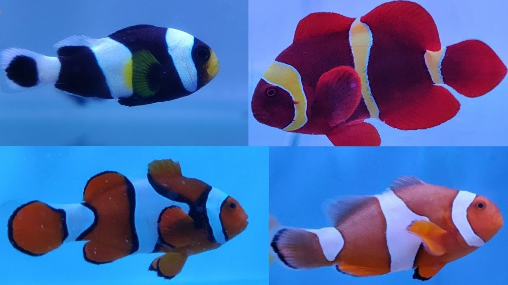

Introduction
About one third of the earth is covered with water, holding a wide variety of fish species which are very different or unique from each other in terms of their body, color, sizes, habitat, behaviour, history and various other kinds of attributes in their respective living environment. In this article, my main focus will be on a specific fish species which had also been starred in an American computer-animated movie and the name of that species is Common Clownfish or Anemonefish. On scientific-basis these species are also known as Amphiprion percula. There are at least 30 known species of clown fishes today. It is only a fish species with in many which make a symbiotic relationship with the sea anemone. They perform a special dance when they find their host anemone to get completely assimilated with their home.
Let's further discuss breifly some of the interseting characterstics of these fishes:
-
Physical attributes
The body shape of a clown fish is oval like and compressed laterally. They usually have body color ranges from bright orange to reddish-brown and three whitestrips on the head (just behind the eye), middle and tail with each having fine black outlines respectivly. These fish species can grow upto the length of the 11 cm or almost 4.5 inches. Their lifespan generally lasts from 3 to 10 years depending upon the conditions of their surroundings and how much care they receive if they are in captivity of someone like in an aquarium.
 -
Region of Occurence
These species are commonly found in the regions of Pacific Ocean and Indian Ocean. However, apart from this they also occur in black color which is very rare and can be found in the areas of Northern Austrailia, Japan and Southeast Asia.
-
Food habits
These type of species are omnivores which means they eat meat and plants. They normally feed on zooplankton, algae and other parasites which can affect their host anemone.
-
Lifecycle and Reproduction habits
The process of reproduction usually occur in tropical waters. Female clown fish is attaracted my male clown fish through chasing, biting and extending of fins. Then they both, chasing each other, find a place which is commonly a coral reef or a piece of rock where the female fish can lay its eggs. After laying of eggs, female fish goes away from that place and then the male fish is reponsible for the fertilization, protection and fanning of those eggs. Eggs take 7 - 10 days to hatch depending on the temperature condition of the water. When the eggs are hatched, the new born clown fishes are called Fry. These young borns are all male fishes and have to find food by their own. Then, they starts adapting to their host anemones. Usually, females are larger than male and those which are stronger than all others mate to reproduce. At times when the females dies, then these species have the abitlity to change gender and thus the most stronger male fish change its gender to female. These species comes under the protandrous hermaphrodites. Protandrous hermaphrodites are the species which have to change from male sex to female sex.
Life cycle of the fish
Mating Dance Ritual
-
Social System
Another interesting facts about these fishes is that they form social hierarchies in their societies. Their dominance between each other depend on the which social rank they're on. If it is a young fish and enters a new anemone, then it has to face aggression by other clownfishes because it will belong to the lower level of society in their terms. Moreover, mating is also based on the rank. The most strong pair reproduces more than that of their peers. The group in which these species exists is called Queue or School. For more information, you can click here and then go to Queue selection topic
-
Communication
These species communicate in a very unique way that is they make popping and clicking sounds while conversing with each other. They make pop noise toward a smaller fish and a click toward a larger fish.Krzysztof Odziomek/Shutterstock